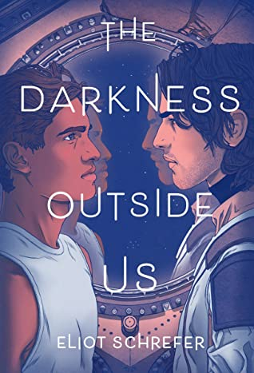
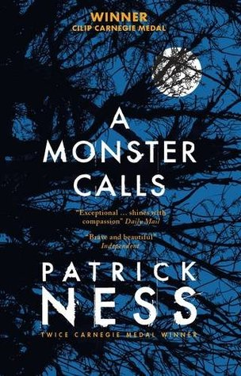
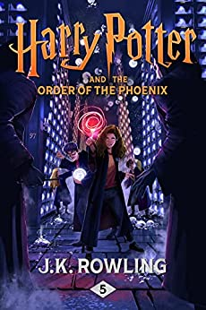

The Secret History
by Donna Tart
Donna Tart writes a book regarding a group of horrible people. You start off being kind to them, trying to understand their motives, but as the story goes on, they continue to show their true colors to the reader, making you doubt time and again, who is really the villain involved in the story.

The Darkness Outside of Us
by Eliot Schrefer
The cover for this book was the first thing that drew me to it. The story and the questions regarding our own humanity and what it truly means to be human was something I didn't expect to find in this book.

A Monster Calls
by Patrick Ness
I read the audiobook first believing it was a good heart-warming story. What I got instead was me crying my eyes out when I got to the last minutes of the audiobook. It was so suddenly the way this story captured me. It made my cry for all different reasons unrelated to the story's main problem, and I believe is a story for all ages and one worth reading.

Harry Potter and the Order of Phoenix
by J.K. Rowling
Hear me out with the five star rating. I didn't like this book at first, I loathed having to read Harry's turmoil and angsty phases during the book, but it's such a good portrayal of it. We tend to overlook the harsh parts of Harry Potter and this book is the perfect reflection of how Harry actually felt with all of the situations going around him.

Percy Jackson and the Lightning Thief
by Rick Riordan
Greek Mythology is all I have to say.